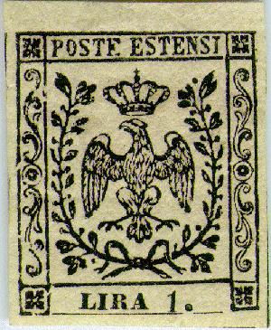
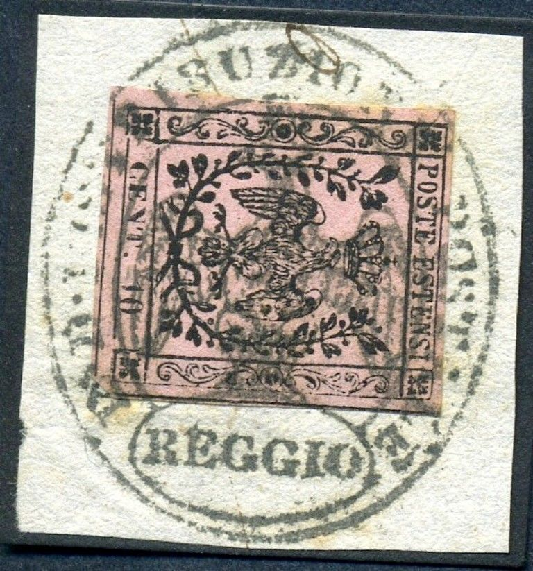

{kind=link}

Return To Catalogue - Modena 1852 issue, forgeries part 1 - Modena 1852 issue, forgeries part 2 - Modena 1859 issue - Modena 1859 newspaper stamp - Italy
Note: on my website many of the
pictures can not be seen! They are of course present in the
catalogue;
contact me if you want to purchase the catalogue.
Currency: 100 Centesimi = 1 Lira.
With thanks to Lorenzo, (check his excellent website on Italian States! http://www.antichistati.com/800/index800.html) who kindly set some of his images at my disposal.
Modena was a duchy in Italy. It was annexed by Sardinia in 1860.
5 c black on green 10 c black on red 15 c black on yellow 25 c black on brown 40 c black on blue 1 Lira black


B.G. 9 c black on violet (B.G.=Bollo Gazette=Newspaper stamp) 10 c black on violet (Newspaper stamp)
The 9 c stamp exist with 'B.G. CEN 9' in large size (first printing) and smaller sizes (see images above).
A 9 c black on violet exists without the 'B.G.', it is a stamp that was prepared but never been issued (due to a change in rate from 9 c to 10 c). It was sold to stamp collectors afterwards.
The 1 Lira is the only stamp with a watermark (large letter 'A'), all the other stamps have no watermark. This watermark can be found inverted or upside down.

(Left variety without dot and right with dot)
For the specialist: the 5 c, 10 c and the 40 c have been issued with and without dot behind the value. The 15 c and 25 c only exist without dot behind the "15" and "25". The 1 L has only been issued with dot behind the "1". A numer of errors exists in the value label for all values (for example "CNET.40"), they are all rare, examples:


("CENE 40" instead of "CENT 40", 10 c with
rotated "N" in "CENT", "CE6T.10"
and "CEN1.10")

A few more misrpints "49" instead of "40" and
"CE6T" instead of "CENT".
Value of the stamps |
|||
vc = very common c = common * = not so common ** = uncommon |
*** = very uncommon R = rare RR = very rare RRR = extremely rare |
||
| Value | Unused | Used | Remarks |
| 5 c | *** | *** | |
| 9 c | RR | R | Newspaper stamp; With large 'BG': RRR |
| 9 c | * | - | No 'BG' (non issued stamp) |
| 10 c black on red | RR | R | |
| 10 c black on violet | *** | RR | Newspaper stamp |
| 15 c | *** | *** | |
| 25 c | *** | *** | |
| 40 c | R | R | |
| 1 L | R | RRR | |
'Horizontal bars' cancel, this cancel also exists in blue.

Horizontal bars cancel with additional "BRESCELLO" in
an ellipse cancel.

'P.D. in a box' cancel

Rhomb cancel.

Rhomb cancel on letter (applied twice) and a "MODENA"
Cerchio con cappello date cancel.

Elliptic "REGGIO" cancel with eagle in the center and
"R.DIDISTRIBUZIONE POSTALE" written around it.

Circular cancel with two circles surrounding the date, but with
"MODENA" pasted on top of it.

Could this be a 'Griglietta' cancel? It might be a forged cancel
though...


A very suspicious "MODENA" cancel with date "12
MAG. 54". This looks like two drops of water to the
illustration of this cancel in the Sassone catalogue (with
exactly the same date!). Next to it a 20 c of the next issue with
a "MODENA 20 OTT 59 1 C" cancel which is also taken
from the Sassone catalogue (most likely originating from the same
source).
Could this be an essay? The bottom part is missing and the word
"Saggio" is added to the text (reduced size). I've also
seen this 'essay' on other colors of paper (green, lilac, brown,
yellow, white). Some sources say that these are Usigli reprints (Usigli was a printer who
also reprinted Papal States stamps). They do indeed look very
similar to the Romagne Usigli reprints, where the word
"Saggio" is also printed at the bottom. The book 'The
Stamps of the Duchy of Modena and the Modenese Provinces' by
Emilio Diena (1905?), says "The specimens which have the
word “ Saggio” at the bottom, instead of the value, are
bogus, and of Florentine manufacture. In his Catalogo e
Guida Generale, Sc. (Florence, 1875) Usigli mentions no less than
forty-two varieties of these pretended essays, printed in black
or in colour on paper or on thin cardboard ; they were executed
with a false engraving, which was used also to reproduce 1 lira
stamps and newspaper stamps (first printing of 1853)."


Another proof, probably from the same source. The eagle's head is
different from a genuine stamp. I've also seen these proofs on
yellow and grey paper.
For forgeries of these stamps, click here for part 1 or Modena 1852 issue, forgeries part 2.
For the issues of Modena of 1859 click here or Modena 1859 newspaper stamp.
Books: 'The Stamps of the Duchy of Modena and the Modenese Provinces' by Emilio Diena (1905?)
{kind=link}